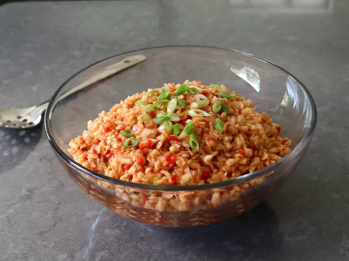

Sweet Slaw

Description
With this pitmaster recipe for Carolina red slaw, besides learning a new and delicious barbecue side dish, we'll share a few tips that will make every coleslaw better.
Ingredients
- 2 pounds finely chopped green cabbage
- 2 teaspoons kosher salt
- 3/4 cup ketchup
- 1/2 cup finely diced red bell peppers
- 1/4 cup apple cider vinegar
Steps
- Add finely chopped cabbage to a large bowl and sprinkle over the salt. Mix well and let sit for 30 minutes. If using fine salt, use half the amount.
- Transfer cabbage to a strainer, and set aside to drain for 10 minutes.
- Add ketchup, red bell pepper, cider vinegar, sugar, smoked paprika, black pepper, cayenne pepper, sambal chili sauce, and sriracha to a bowl; stir until dressing is well combined.
Go Home Page